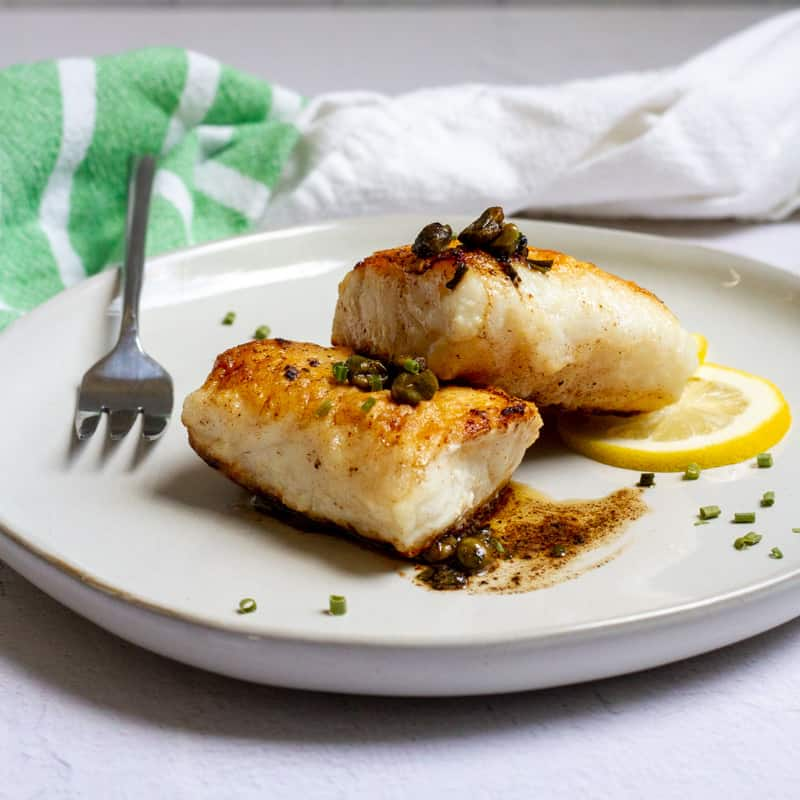

<!DOCTYPE html>
<html lang="en">
<!--Version 4.0
        Name:
        Date Completed:
    -->

<head>

    <title>WikiFood</title>
    <!DOCTYPE html>
    <html>

    <head>
        <title>My Page Title</title>
        <link rel="icon" type="image/x-icon" href="images/favico.ico">
    </head>

    <body>


    </body>

    </html>

    <!-- Meta -->
    <meta charset="utf-8">
    <meta http-equiv="X-UA-Compatible" content="IE=edge">
    <meta name="viewport" content="width=device-width, initial-scale=1, shrink-to-fit=no">
    <meta name="description" content="WebDev Version 4.0">

    <!-- CSS -->
    <link rel="stylesheet" href="https://stackpath.bootstrapcdn.com/bootstrap/4.5.2/css/bootstrap.min.css">
    <link rel="stylesheet" href="https://maxcdn.bootstrapcdn.com/font-awesome/4.7.0/css/font-awesome.min.css">
    <link rel="stylesheet" href="CSS/style.css">

    <!-- JavaScript -->
    <!-- These are needed to get the responsive menu to work -->
    <script src="https://ajax.googleapis.com/ajax/libs/jquery/3.6.0/jquery.min.js"></script>
    <script src="https://cdnjs.cloudflare.com/ajax/libs/popper.js/1.14.7/umd/popper.min.js"></script>
    <script src="https://stackpath.bootstrapcdn.com/bootstrap/4.3.1/js/bootstrap.min.js"></script>

    <!-- Custom styles for this template -->
    <style type="text/css">

    </style>
</head>

<body>
    <!---------------------------------- Begin the nav-bar ------------->
    <div class="menu ">
        <nav class="navbar navbar-expand-md navbar-dark bg-dark ">
            <a href="http://shakonet.isd720.com " class="navbar-brand ">WIKI Food</a>
            <button type="button " class="navbar-toggler " data-toggle="collapse " data-target="#navbarCollapse ">
                <span class="navbar-toggler-icon "></span>
            </button>
            <td></td>

            <!-- Navbar -->
            <nav class="navbar navbar-expand-lg navbar-light bg-body-tertiary">
                <!-- Right -->
                <div>
                    <a href="" class="me-4 text-reset">
                        <i class="fab fa-facebook-f"></i>
                    </a>
                    <a href="" class="me-4 text-reset">
                        <i class="fab fa-twitter"></i>
                    </a>
                    <a href="" class="me-4 text-reset">
                        <i class="fab fa-google"></i>
                    </a>
                    <a href="" class="me-4 text-reset">
                        <i class="fab fa-instagram"></i>
                    </a>
                    <a href="" class="me-4 text-reset">
                        <i class="fab fa-linkedin"></i>
                    </a>
                    <a href="" class="me-4 text-reset">
                        <i class="fab fa-github"></i>
                    </a>
                </div>
                <!-- Right -->
                <div class="collapse navbar-collapse " id="navbarCollapse ">
                    <div class="navbar-nav ">
                        <!--↓↓↓↓↓↓↓↓↓↓↓↓↓↓↓↓↓↓↓↓↓↓ Edit These Items in your Menu ↓↓↓↓↓↓↓↓↓↓↓↓↓↓↓↓↓↓↓↓↓↓-->
                        <a href="index.html " class="nav-item nav-link">Home</a>
                        <a href="Why to eat.html " class="nav-item nav-link">Why to eat</a>
                        <a href="Seasons.html" class="nav-item nav-link">When to eat(seasons)</a>
                        <a href="What to eat.html" class="nav-item nav-link active ">What to eat</a>
                        <a href="contact.html" class="nav-item nav-link " tabindex="-1 ">Contact</a>
                        <!----------------------------------^ Edit These Items in your Menu ^ ------------->
                    </div>
                    <div class="navbar-nav ml-auto">
                        <a href="#" class="nav-item nav-link disabled">Login</a>
                    </div>
                </div>
            </nav>
            </menu>

            <!---------------------------------- End the nav-bar ------------------------------------->

            <main class="margin ">


    </div>
    </div>
    </div>
    <div id="What to eat">
        <div class="container">
            <div class="flipper">
                <div class="front">
                    
                    <p class="caption">Fruits</p>
                </div>
                <div class="back">
                    <a href="https://en.wikipedia.org/wiki/School" target="_blank">
                        <h1>Mangos</h1>
                    </a>
                    <p class="description">“They are low calorie, high in fiber and vitamins A and C. They also have other vitamins, minerals and antioxidants and have been linked with multiple health benefits. Plus, all my kids like them, so it is something we can all agree
                        on.” – Bob Canter, professor of surgery at UC Davis Division of Surgical Oncology </p>
                </div>
            </div>
        </div>
    </div>
    </div>
    </div>
    <div class="container">
        <div class="flipper">
            <div class="front">
                
                <p class="caption">Food</p>
            </div>
            <div class="back">
                <a href="https://en.wikipedia.org/wiki/Fish" target="_blank">
                    <h1>Fish</h1>
                </a>
                <p class="description"> “Eat plenty of fish, which are high in healthy omega 3 fatty acids, and smaller portions of red meat to reduce your risk of diseases like stroke, heart disease and cancer." – Bob Canter, professor of surgery at UC Davis Division of Surgical
                    Oncology
                </p>
            </div>


            <!--↑↑↑↑↑↑↑↑↑↑↑↑↑↑↑↑↑↑↑↑↑↑ Make sure all your content is above this line ↑↑↑↑↑↑↑↑↑-->
            </main>


            <!---------------------------------- Begin the footer ------------->


            <footer class="bg-body-tertiary text-center text-lg-start">
                <!-- Copyright -->
                <div class="text-center p-3" style="background-color: rgba(200, 90, 10, 1.0);">
                    © 2024 Copyright:
                    <a class="text-body" href="http://127.0.0.1:5500/Version6.0/user10/index.html">WikiFood</a>
                </div>
                <!-- Copyright -->
            </footer>

            <span class="title ">Social media</span>
            <table id="footerTable ">
                <tr>
                    <td>
                        <i class="fa fa-facebook fa-3x " aria-hidden="true "></i>
                    </td>
                    <td>
                        <i class="fa fa-twitter fa-3x " aria-hidden="true "></i>
                    </td>
                    <td>
                        <i class="fa fa-instagram fa-3x " aria-hidden="true "></i>
                    </td>
                </tr>
            </table>
            </footer>


            <!---------------------------------- End the footer ------------->